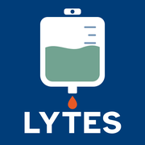

ICU electrolytes
Example values from a made-up patient are filled in. Tap Clear to start your own.
Typed values count right away. Logging saves them to the trend and resets the start times for any electrolyte in this draw. Entered a wrong value? Tap Edit on that row in the Lab trend.
| Edit | Drawn | K | Mg | Phos | Ca | Alb | Corr. Ca | iCa |
|---|
| Lab | Normal | Protocol replaces at |
|---|---|---|
| K | 3.5–5.0 mEq/L | 4.0 or less |
| Mg | 1.6–2.6 mg/dL | 1.8 or less |
| Phos | 2.6–4.9 mg/dL | 2.5 or less (PO), 3.0 or less (IV) |
| Ca, total | 8.7–10.4 mg/dL | Corrected 8.5 or less |
| Albumin | 3.2–4.8 g/dL | Used to correct Ca |
| Ionized Ca | 1.16–1.31 mmol/L | 1.12 or less |
The app shows what the sheet says and flags these instead of guessing.
Last updated November 17, 2026.
Lyte Check (“the app”) restates one hospital electrolyte replacement protocol to help a nurse find the matching row, dose times and recheck time. It is not medical advice, and it is not a protocol, policy, procedure or order.
The app is a personal, independent project. It has not been reviewed, approved or endorsed by Reston Hospital Center, HCA Healthcare, any employer, school, educator, professional organization or regulatory body, and it is not affiliated with any of them.
Never give anything based on the app alone. Give replacement only under a valid order or an active protocol order, within your scope of practice and your facility’s policies, pharmacy guidance and product labeling. Where the app differs from any of these, they take precedence.
The tables were transcribed from a printed, undated copy of the protocol and checked row by row, but they may contain errors, and the protocol may have changed since. Verify every value, dose, rate and recheck time against the current protocol, the order and the pharmacy before use. Where the sheet is unclear, the app says so instead of guessing.
The app is provided “as is” and “as available,” without warranties of any kind, express or implied, including accuracy, completeness, timeliness, merchantability or fitness for a particular purpose.
To the fullest extent permitted by law, the author is not liable for any loss, injury, claim or damage of any kind arising from the use of, or reliance on, the app. You use it at your own risk and remain responsible for your own clinical decisions.
The app is not designed for emergencies. In an emergency, follow your facility’s emergency response procedures.
The app does not collect, send or store anything on a server. Values and times stay only in your own device’s browser storage until you tap Clear. Do not enter names, MRNs, room numbers or anything else that could identify a patient.
Reston Hospital Center and HCA Healthcare are named only to identify the source of the protocol. Expanse is a trademark of Medical Information Technology, Inc. (MEDITECH). Other names belong to their owners and are used for identification only.
© 2026 Hanniel G. Ortiz. The app’s original content (its wording, explanations, layout, print sheet design and icon) is licensed under the Creative Commons Attribution-NonCommercial-NoDerivatives 4.0 International License (CC BY-NC-ND 4.0).
In plain terms: you may share the app and its original content unchanged, for free, with credit to the author and a link to the license. You may not sell it, use it commercially, or share changed versions.
Not covered by this license:
By using the app, you agree to these terms. If you do not agree, do not use the app.
Last reviewed November 17, 2026.
The flags are prompts, not orders. The provider's orders and the unit's protocol decide what is given. Nothing is sent anywhere. Your numbers stay on this device so a closed app doesn't lose them; Clear wipes them. Version 2026-11-17.12.
© 2026 Hanniel G. Ortiz. Original content licensed CC BY-NC-ND 4.0; the protocol belongs to Reston Hospital Center. Not affiliated with or endorsed by Reston Hospital Center or HCA Healthcare. See Disclaimer, terms and license.